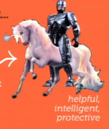

nescala 2014 roundup
by Hung Lin @hunglin
Who is @hunglin?
What is nescala?
It's One of the Big Event in Scala Community
nescala 2014
buzz words
1st talk: Scala's Type System
by Heather Millerwhat's Scala's Type System?
abstract type members
trait Pet
class Cat extends Pet
class Person {
type Pet
}
class Susan extends Person {
type Pet = Cat
}
class Person[Pet]
class Susan extends Person[Cat]
existential types
case class Fruit[T](val weight: Int, val tooRipe: T => Boolean)
class Farm {
val fruit = new ArrayBuffer[Fruit[T] forSome { type T }]
}
higher-kinded types (container types, type constructor)
trait C[M[_]] { }
//C is higher-kinded type because it abstracts over type constructor M
implementation of functor in Scala
trait GenericFunctor[->>[_, _], ->>>[_, _], F[_]] {
def fmap[A, B](f: A ->> B): F[A] ->>> F[B]
}
trait Functor[F[_]] extends GenericFunctor[Function, Function, F] {
final def fmap[A, B](as: F[A])(f: A => B): F[B] =
fmap(f)(as)
}
trait Applicative[F[_]] extends Functor[F] {
def pure[A](a: A): F[A]
def apply[A, B](f: F[A => B]): F[A] => F[B]
final def apply[A, B](fa: F[A])(f: F[A => B]): F[B] =
apply(f)(fa)
override def fmap[A, B](f: A => B): F[A] => F[B] =
apply(pure(f))
}
typeclasses (it's so 2013)
// typeclass:
trait Ordering[T] {
def compare(x: T, y: T): Int
}
// typeclass instance:
implicit object intOrdering extends Ordering[Int] {
def compare(x: T, y: T): Int = x - y
}
// usage:
def sort[T](s: Seq[T])(implicit evidence: Ordering[T]): Seq[T]
// use context bound to write less codes
def sort[T: Ordering](s: Seq[T]): Seq[T]
type level programming
WAT?
EPFL interview question
(if you want to be Odersky's PhD student)
please implement a map, using scala compiler
let's define interface first:
how to do it?
use implicits for defining relations on types
class HasCapital[T <: Country, C <: City] {
def capital: C
}
implicit val capitalOfFrance = new HasCapital[France, Paris]
implicit val capitalOfGermany = new HasCapital[Germany, Berlin]
implicit val capitalOfUK = new HasCapital[UK, London]
applying type level functions
def lookupCapital[T](implicit ic: HasCapital[T, C]): C = {
println(s"the capital is ${ic.capital.toString}")
ic.capital
}
val c = lookupCapital[France]
dependent types
(cool kids' buzz word of 2014)
Odersky's talk @ strangeloop 2013 The Trouble With Types
resources
May Your Data Ever Be Coherent
by Daniel Spiewak
def sumPairs(left: List[Int], right: List[Int]): Int = {
if (left.isEmpty)
0
else
(left.head + right.head) + sumPairs(left.tail + right.tail)
}
def pairInts(x: List[Int], y: List[Int]): List[(Int, Int)] = ???
def sumPairs(pairs: List[(Int, Int)]): Int = {
if (pairs.isEmpty)
0
else {
val (left, right) = pairs.head
left + right + sumPairs(pairs.tail)
}
}
def sumPairs(pairs: List[(Int, Int)]): Int = pairs match {
case (left, right) :: tail =>
left + right + sumPairs(tail)
case Nil => 0
}
xs.length is bad and useless
length explode one datum into twotake away:
Summingbird
by Oscar BoykinMacros v.s. Types
by Eugene BurmakoFunctional Programming is Terrible
by Runar BjarnasonWartRemover
by Brian McKennasbt 1.0
by Josh Suerethand more
Happy Hours @ Foursquare HQ
Day2: Unconference
call for ACTIONS
nescala 2015 @ DC
Questions?